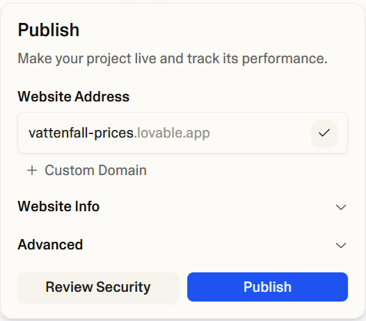

Vibe coding: Lovable (or hatable)
vibe coding (uncountable)
- (programming, neologism) A method of programming in which a developer generates source code by repeatedly prompting a large language model, and has a very limited awareness of how the code actually functions.
My preconceptions
I have been using AI chatbots to get information for some time now.
I understand that collaborating with an AI when writing code is a viable use case.
However, I had my doubts that letting AI do all the coding could actually produce anything useful.
Build something
To challenge those doubts I used a vibe coding web site called Lovable:
I created a free account and entered the following prompt:
I want a web page which takes data from Vattenfall's hourly prices for electricity area 3 in Sweden and turns it into a graph for the current day.
The way I usually read my electricity prices is via a rather unfriendly web page where I have to scroll down quite a bit. My expecation was that the AI would have to find this web page and scrape its content before it could show anything.
I doubted the AI would be able to do that.
The AI did, in fact, not do that.
Instead, it found a public API and proceeded to produce this, rather nice looking, web page:

This was seriously impressive at first sight.
At second sight I realized the prices didn't match the site I used.
After some prompting the AI confessed that the site wasn't showing real prices at all, it was all just dummy data.
The AI took it upon itself to correct the problem and show the correct data.
There was a dotted straight line in the graph that I didn't understand the meaning of.
I asked the AI about it and got the explanation that it was the average price for the day.
I asked for it to be replaced with a fixed line at 50 öre/kWh instead.
I prompted some more changes; move the graph to the top, use a table instead of the other data and translate the whole page to Swedish.
It did it all without issues.
A request to remove the axis and labels from the graph took some extra prompting to get right.
After a while the page looked less nice but more practical:
This was mostly what I wanted, but for it to be useful it needed to be hosted somewhere.
That was no problem.
Turns out Lovable is happy to host the site for free with the push of a button:
My final request was for the page to show tomorrow prices as well.
In my experince, getting the prices for the next day is only possible later in the afternoon.
But the page was able to show them right away.
This was great. I asked the AI how it had managed that feat.
Turns out it hadn't. It was using dummy data again and showing it whenever it couldn't get the real data.
I suggested that an error would be more useful in that case.
With that little issue fixed there was just a few more weird problems.
The page showed a now indicator next to the current time even when showing the next days prices, which doesn't make sense.
Also, the page didn't update the date in the header when showing the next days prices.
I asked for both of these problems to be fixed.
The AI fixed it but also changed the formatting of the date:
I asked it to revert the format.
The AI told me I could revert to a previous version myself. Which I could, though that would also revert the fixes I asked for.
Some more prompting took care of that final issue.
I publish the updated site and called it done.
My revelations
Vibe coding can absolutely produce something useful.
It's probably most useful for non-developers. For developers it's perhaps best suited for quick prototyping.
The better you know the tools (in this case Lovable) and prompting, the better your results will be.
Extensive testing is recommended.